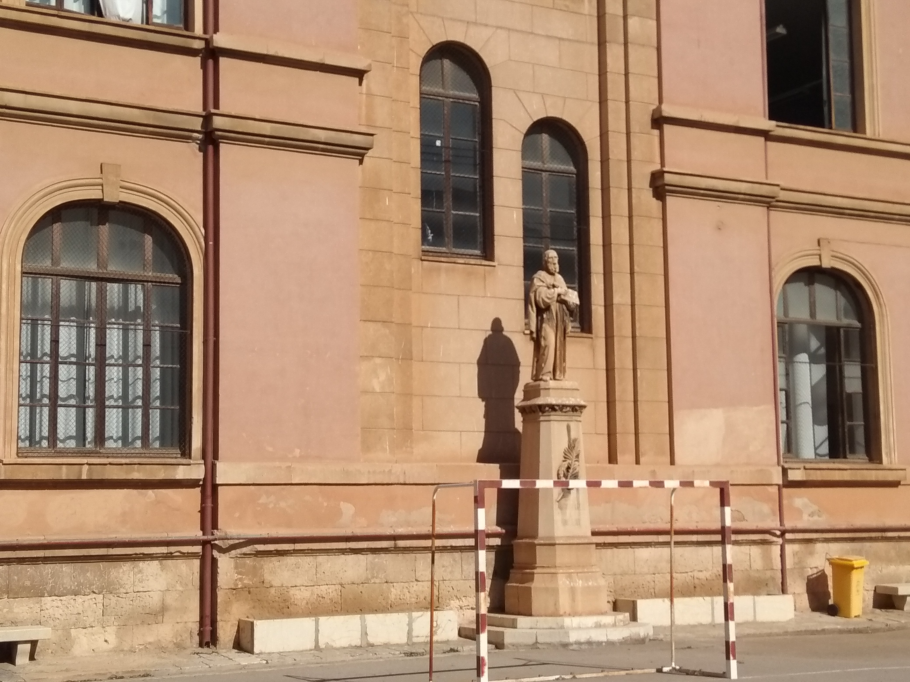
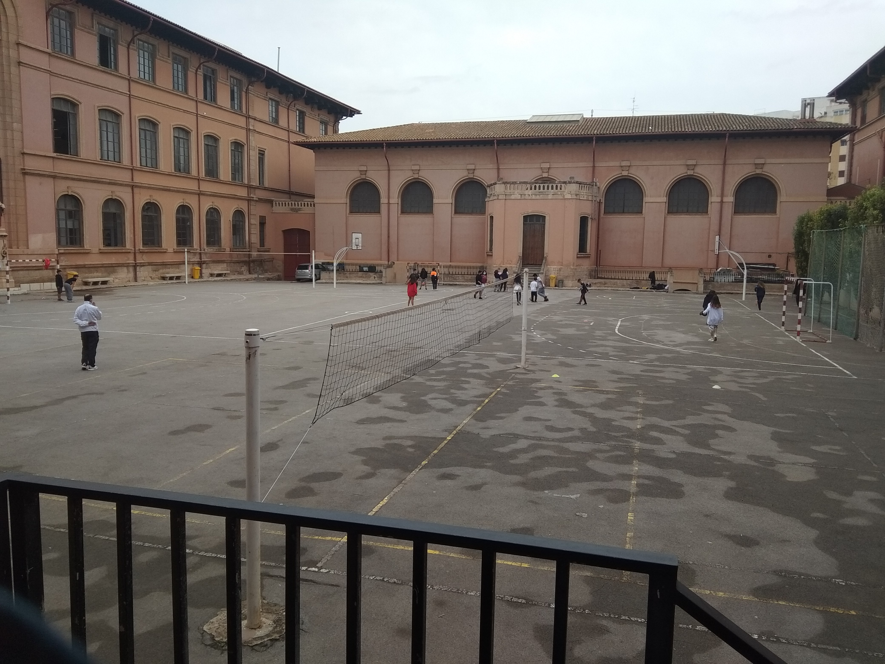

Aquest és el pati de l'Institut de Ramon Llull, es molt gran.


Que puc fer?
Pots jugar al pati a les pistes de bàsquet, de volley i de futbol.
This web page is a part of a demonstration of fluid web design made by w3schools.com. Resize the browser window to see the content respond to the resizing.